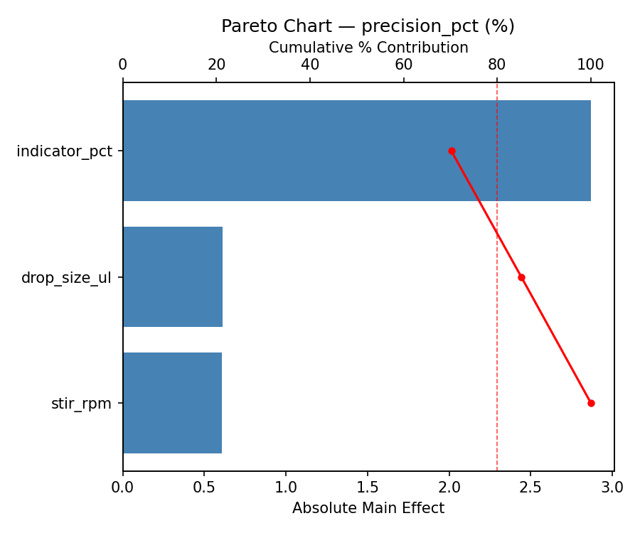
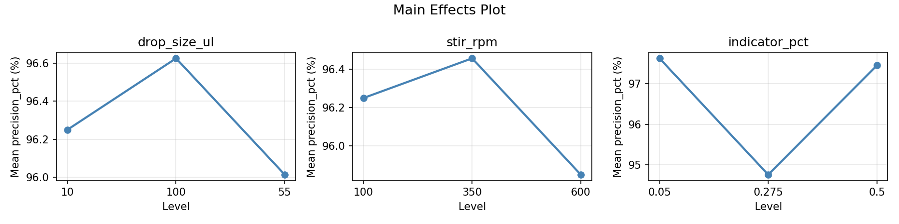
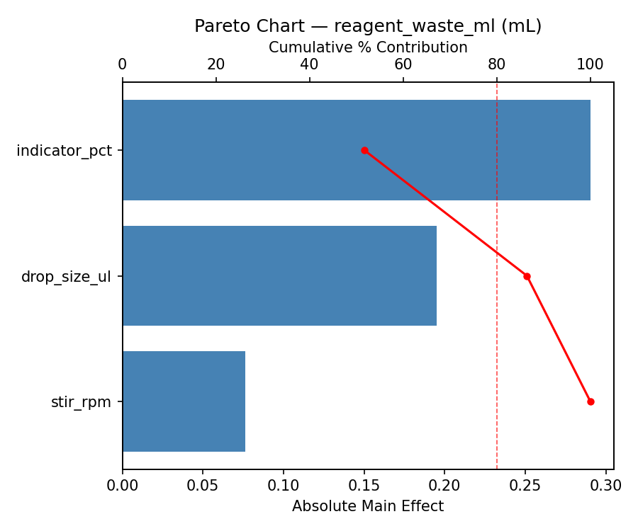
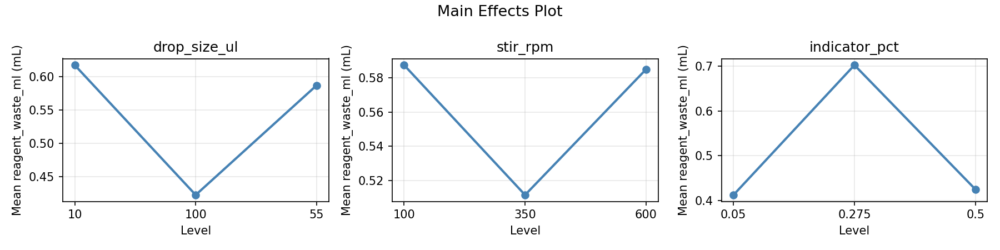
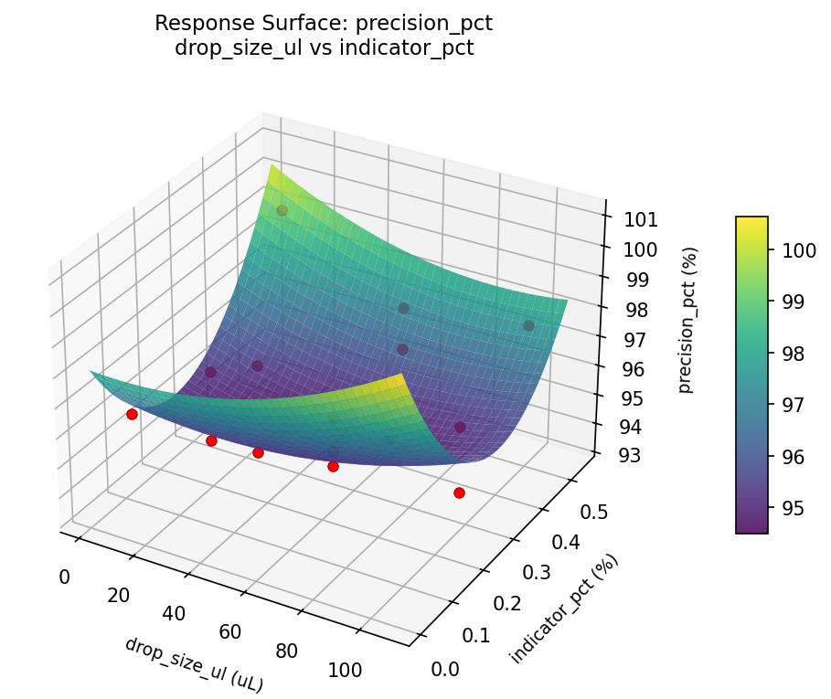
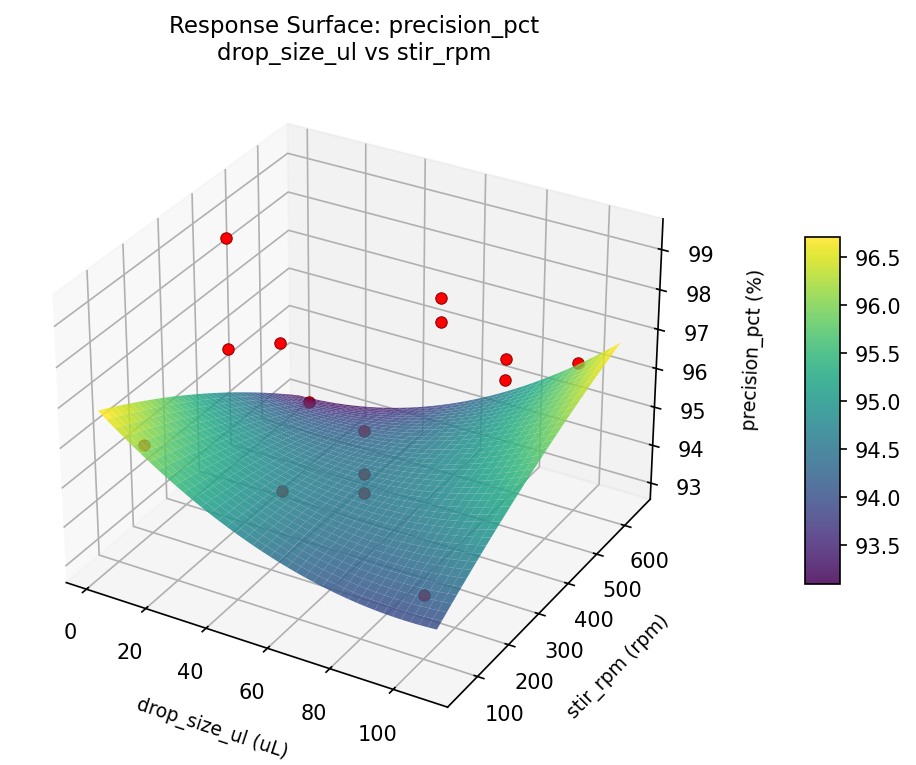
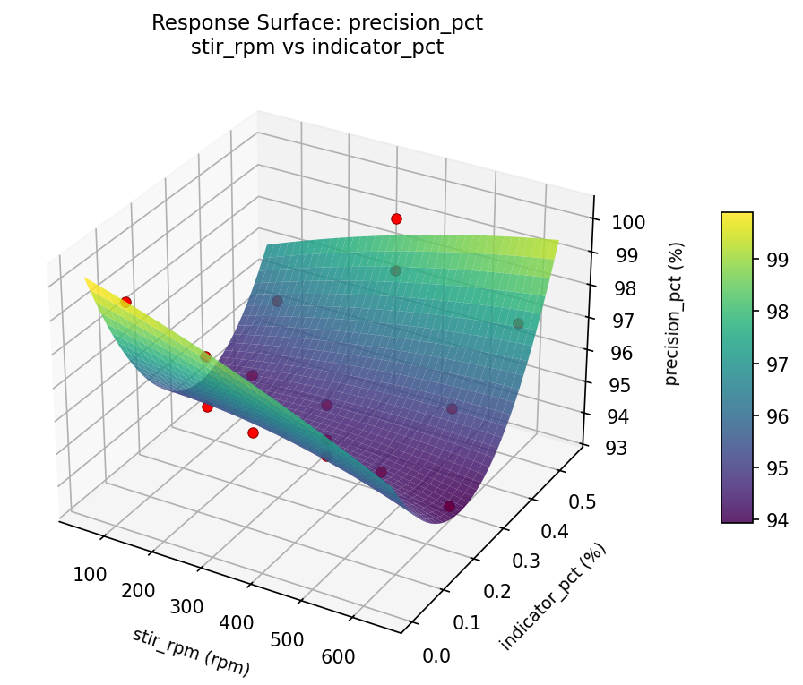
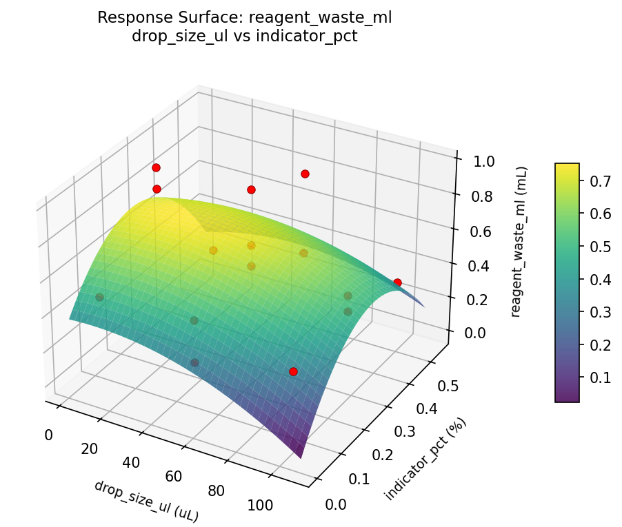
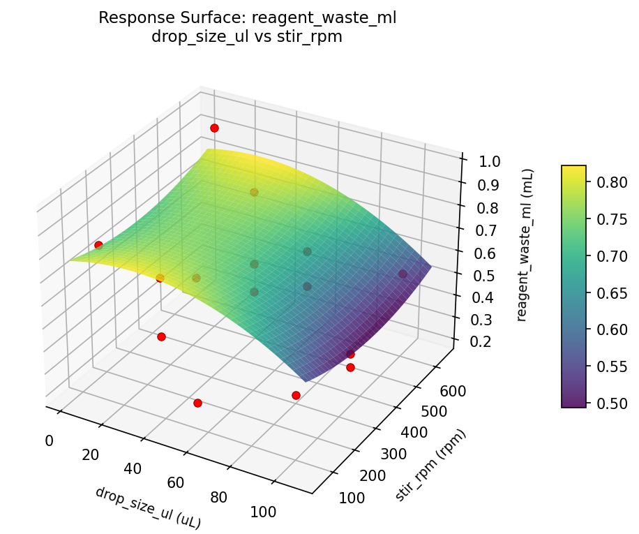
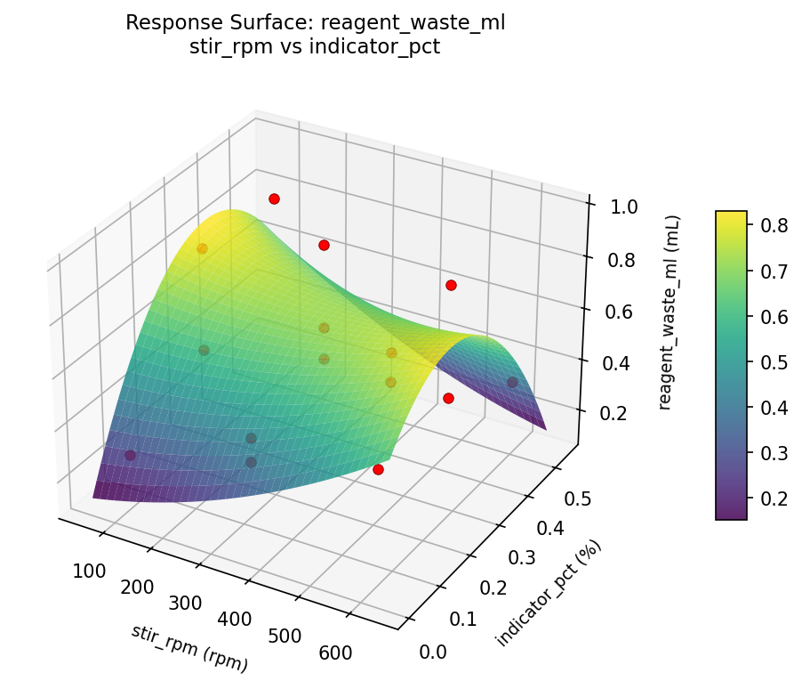

Summary
This experiment investigates titration accuracy optimization. Box-Behnken design to maximize endpoint precision and minimize reagent waste by tuning drop size, stirring speed, and indicator concentration.
The design varies 3 factors: drop size ul (uL), ranging from 10 to 100, stir rpm (rpm), ranging from 100 to 600, and indicator pct (%), ranging from 0.05 to 0.5. The goal is to optimize 2 responses: precision pct (%) (maximize) and reagent waste ml (mL) (minimize). Fixed conditions held constant across all runs include analyte = HCl, titrant = NaOH.
A Box-Behnken design was chosen because it efficiently fits quadratic models with 3 continuous factors while avoiding extreme corner combinations — requiring only 15 runs instead of the 8 needed for a full factorial at two levels.
Quadratic response surface models were fitted to capture potential curvature and factor interactions. The RSM contour plots below visualize how pairs of factors jointly affect each response.
Key Findings
For precision pct, the most influential factors were indicator pct (70.2%), drop size ul (14.9%), stir rpm (14.9%). The best observed value was 99.3 (at drop size ul = 100, stir rpm = 350, indicator pct = 0.5).
For reagent waste ml, the most influential factors were indicator pct (51.7%), drop size ul (34.7%), stir rpm (13.5%). The best observed value was 0.21 (at drop size ul = 10, stir rpm = 100, indicator pct = 0.275).
Recommended Next Steps
- Run confirmation experiments at the predicted optimal settings to validate the model.
- Consider whether any fixed factors should be varied in a future study.
Experimental Setup
Factors
| Factor | Low | High | Unit |
|---|
drop_size_ul | 10 | 100 | uL |
stir_rpm | 100 | 600 | rpm |
indicator_pct | 0.05 | 0.5 | % |
Fixed: analyte = HCl, titrant = NaOH
Responses
| Response | Direction | Unit |
|---|
precision_pct | ↑ maximize | % |
reagent_waste_ml | ↓ minimize | mL |
Configuration
{
"metadata": {
"name": "Titration Accuracy Optimization",
"description": "Box-Behnken design to maximize endpoint precision and minimize reagent waste by tuning drop size, stirring speed, and indicator concentration"
},
"factors": [
{
"name": "drop_size_ul",
"levels": [
"10",
"100"
],
"type": "continuous",
"unit": "uL"
},
{
"name": "stir_rpm",
"levels": [
"100",
"600"
],
"type": "continuous",
"unit": "rpm"
},
{
"name": "indicator_pct",
"levels": [
"0.05",
"0.5"
],
"type": "continuous",
"unit": "%"
}
],
"fixed_factors": {
"analyte": "HCl",
"titrant": "NaOH"
},
"responses": [
{
"name": "precision_pct",
"optimize": "maximize",
"unit": "%"
},
{
"name": "reagent_waste_ml",
"optimize": "minimize",
"unit": "mL"
}
],
"settings": {
"operation": "box_behnken",
"test_script": "use_cases/187_titration_accuracy/sim.sh"
}
}
Experimental Matrix
The Box-Behnken Design produces 15 runs. Each row is one experiment with specific factor settings.
| Run | drop_size_ul | stir_rpm | indicator_pct |
|---|
| 1 | 55 | 100 | 0.05 |
| 2 | 55 | 350 | 0.275 |
| 3 | 100 | 350 | 0.5 |
| 4 | 100 | 350 | 0.05 |
| 5 | 55 | 350 | 0.275 |
| 6 | 55 | 350 | 0.275 |
| 7 | 10 | 350 | 0.5 |
| 8 | 100 | 100 | 0.275 |
| 9 | 55 | 100 | 0.5 |
| 10 | 100 | 600 | 0.275 |
| 11 | 10 | 350 | 0.05 |
| 12 | 55 | 600 | 0.5 |
| 13 | 10 | 100 | 0.275 |
| 14 | 10 | 600 | 0.275 |
| 15 | 55 | 600 | 0.05 |
Step-by-Step Workflow
1
Preview the design
$ python doe.py info --config use_cases/187_titration_accuracy/config.json
2
Generate the runner script
$ python doe.py generate --config use_cases/187_titration_accuracy/config.json \
--output use_cases/187_titration_accuracy/results/run.sh --seed 42
3
Execute the experiments
$ bash use_cases/187_titration_accuracy/results/run.sh
4
Analyze results
$ python doe.py analyze --config use_cases/187_titration_accuracy/config.json
5
Get optimization recommendations
$ python doe.py optimize --config use_cases/187_titration_accuracy/config.json
6
Generate the HTML report
$ python doe.py report --config use_cases/187_titration_accuracy/config.json \
--output use_cases/187_titration_accuracy/results/report.html
Features Exercised
| Feature | Value |
|---|
| Design type | box_behnken |
| Factor types | continuous (all 3) |
| Arg style | double-dash |
| Responses | 2 (precision_pct ↑, reagent_waste_ml ↓) |
| Total runs | 15 |
Analysis Results
Generated from actual experiment runs using the DOE Helper Tool.
Response: precision_pct
Top factors: indicator_pct (70.2%), drop_size_ul (14.9%), stir_rpm (14.9%).
Pareto Chart

Main Effects Plot

Response: reagent_waste_ml
Top factors: indicator_pct (51.7%), drop_size_ul (34.7%), stir_rpm (13.5%).
Pareto Chart

Main Effects Plot

Response Surface Plots
3D surfaces fitted with quadratic RSM. Red dots are observed data points.
precision pct drop size ul vs indicator pct

precision pct drop size ul vs stir rpm

precision pct stir rpm vs indicator pct

reagent waste ml drop size ul vs indicator pct

reagent waste ml drop size ul vs stir rpm

reagent waste ml stir rpm vs indicator pct

Full Analysis Output
RSM surface: rsm_precision_pct_drop_size_ul_vs_stir_rpm.png
RSM surface: rsm_precision_pct_drop_size_ul_vs_indicator_pct.png
RSM surface: rsm_precision_pct_stir_rpm_vs_indicator_pct.png
RSM surface: rsm_reagent_waste_ml_drop_size_ul_vs_stir_rpm.png
RSM surface: rsm_reagent_waste_ml_drop_size_ul_vs_indicator_pct.png
RSM surface: rsm_reagent_waste_ml_stir_rpm_vs_indicator_pct.png
=== Main Effects: precision_pct ===
Factor Effect Std Error % Contribution
--------------------------------------------------------------
indicator_pct 2.8679 0.4817 70.2%
drop_size_ul 0.6107 0.4817 14.9%
stir_rpm 0.6071 0.4817 14.9%
=== Summary Statistics: precision_pct ===
drop_size_ul:
Level N Mean Std Min Max
------------------------------------------------------------
10 4 96.2500 2.4283 93.4000 99.3000
100 4 96.6250 1.7858 94.2000 98.2000
55 7 96.0143 1.8497 93.8000 99.3000
stir_rpm:
Level N Mean Std Min Max
------------------------------------------------------------
100 4 96.2500 2.1610 94.2000 99.3000
350 7 96.4571 2.0614 93.8000 99.3000
600 4 95.8500 1.6623 93.4000 97.1000
indicator_pct:
Level N Mean Std Min Max
------------------------------------------------------------
0.05 4 97.6250 1.3745 96.5000 99.3000
0.275 7 94.7571 1.1163 93.4000 96.4000
0.5 4 97.4500 1.4911 95.7000 99.3000
=== Main Effects: reagent_waste_ml ===
Factor Effect Std Error % Contribution
--------------------------------------------------------------
indicator_pct 0.2904 0.0625 51.7%
drop_size_ul 0.1950 0.0625 34.7%
stir_rpm 0.0761 0.0625 13.5%
=== Summary Statistics: reagent_waste_ml ===
drop_size_ul:
Level N Mean Std Min Max
------------------------------------------------------------
10 4 0.6175 0.3370 0.2100 0.9500
100 4 0.4225 0.0846 0.3300 0.5300
55 7 0.5871 0.2472 0.2700 0.9700
stir_rpm:
Level N Mean Std Min Max
------------------------------------------------------------
100 4 0.5875 0.2774 0.2700 0.8300
350 7 0.5114 0.2492 0.2100 0.9700
600 4 0.5850 0.2563 0.3500 0.9500
indicator_pct:
Level N Mean Std Min Max
------------------------------------------------------------
0.05 4 0.4125 0.1078 0.2700 0.5100
0.275 7 0.7029 0.2145 0.4400 0.9700
0.5 4 0.4250 0.2640 0.2100 0.8100
Pareto chart (precision_pct): use_cases/187_titration_accuracy/results/analysis/pareto_precision_pct.png
Pareto chart (reagent_waste_ml): use_cases/187_titration_accuracy/results/analysis/pareto_reagent_waste_ml.png
Main effects (precision_pct): use_cases/187_titration_accuracy/results/analysis/main_effects_precision_pct.png
Main effects (reagent_waste_ml): use_cases/187_titration_accuracy/results/analysis/main_effects_reagent_waste_ml.png
Optimization Recommendations
=== Optimization: precision_pct ===
Direction: maximize
Best observed run: #7
drop_size_ul = 100
stir_rpm = 350
indicator_pct = 0.5
Value: 99.3
RSM Model (linear, R² = 0.1442, Adj R² = -0.0891):
Coefficients:
intercept +96.2400
drop_size_ul -0.3250
stir_rpm -0.8500
indicator_pct -0.2250
RSM Model (quadratic, R² = 0.6172, Adj R² = -0.0719):
Coefficients:
intercept +94.7333
drop_size_ul -0.3250
stir_rpm -0.8500
indicator_pct -0.2250
drop_size_ul*stir_rpm +0.6500
drop_size_ul*indicator_pct +1.6000
stir_rpm*indicator_pct -0.8000
drop_size_ul^2 +1.0083
stir_rpm^2 +0.9583
indicator_pct^2 +0.8583
Curvature analysis:
drop_size_ul coef=+1.0083 convex (has a minimum)
stir_rpm coef=+0.9583 convex (has a minimum)
indicator_pct coef=+0.8583 convex (has a minimum)
Notable interactions:
drop_size_ul*indicator_pct coef=+1.6000 (synergistic)
stir_rpm*indicator_pct coef=-0.8000 (antagonistic)
drop_size_ul*stir_rpm coef=+0.6500 (synergistic)
Predicted optimum (from quadratic model):
drop_size_ul = 10
stir_rpm = 350
indicator_pct = 0.05
Predicted value: 98.7500
Model quality: Moderate fit — use predictions directionally, not precisely.
Factor importance:
1. stir_rpm (effect: 1.7, contribution: 44.2%)
2. drop_size_ul (effect: 1.2, contribution: 31.3%)
3. indicator_pct (effect: 0.9, contribution: 24.5%)
=== Optimization: reagent_waste_ml ===
Direction: minimize
Best observed run: #14
drop_size_ul = 10
stir_rpm = 100
indicator_pct = 0.275
Value: 0.21
RSM Model (linear, R² = 0.2170, Adj R² = 0.0035):
Coefficients:
intercept +0.5513
drop_size_ul -0.0525
stir_rpm +0.1025
indicator_pct +0.0950
RSM Model (quadratic, R² = 0.7443, Adj R² = 0.2841):
Coefficients:
intercept +0.8000
drop_size_ul -0.0525
stir_rpm +0.1025
indicator_pct +0.0950
drop_size_ul*stir_rpm -0.1475
drop_size_ul*indicator_pct -0.1625
stir_rpm*indicator_pct +0.0225
drop_size_ul^2 -0.1388
stir_rpm^2 -0.1387
indicator_pct^2 -0.1888
Curvature analysis:
indicator_pct coef=-0.1888 concave (has a maximum)
drop_size_ul coef=-0.1388 concave (has a maximum)
stir_rpm coef=-0.1387 concave (has a maximum)
Predicted optimum (from quadratic model):
drop_size_ul = 10
stir_rpm = 600
indicator_pct = 0.275
Predicted value: 0.8250
Model quality: Good fit — general trends are captured, some noise remains.
Factor importance:
1. indicator_pct (effect: 0.3, contribution: 40.6%)
2. stir_rpm (effect: 0.2, contribution: 33.5%)
3. drop_size_ul (effect: 0.2, contribution: 25.8%)